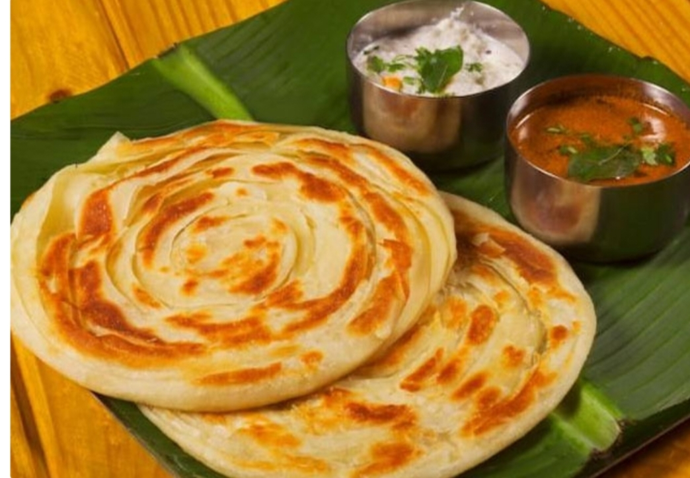

GANESH RESTUARANT Southern – The Top-rated South Indian QSR
Veg Restaurant in Karol Bagh, New Delh
GANESH BHAVAN offers a wide selection of South India Dishes for our esteemed patrons. All the South Indian delicacies are prepared by our expert chefs who
use South Indian ingredients. Step into a tasteful journey where our chefs bring the flavors of the south onto your tables at GANESH Bhavan.
Indulge in South Indian delicacies like the variety of Dosa’s, Malabar paratha, Idli, Vada at GANESH Bhavan – one of the top-rated vegetarian restaurants in Karol Bagh. A warm and prompt staff ensures that all your needs will get proper attention. Head to our South India restaurant near Karol
Bagh and experience the finest delicacies todayTESTIMONAL
Clients review
it is part of sothern hotel.good ambience.authentic south breakfast.digital payments acceptedKusmu Krishna Sankar____

GANESH RESTAURANT
Address
18/1, Arya Samaj Rd, Block 18,
WEA, Karol Bagh, Delhi-05Book a Table
Separate Hall Available For Birthday, Kitty Parties & Get Together
+91 8006698006Opening Hours
Monday – Sunday
06.30 AM – 11.00 PMOur Delivery Partners
- SWIGGY
- ZOMATO